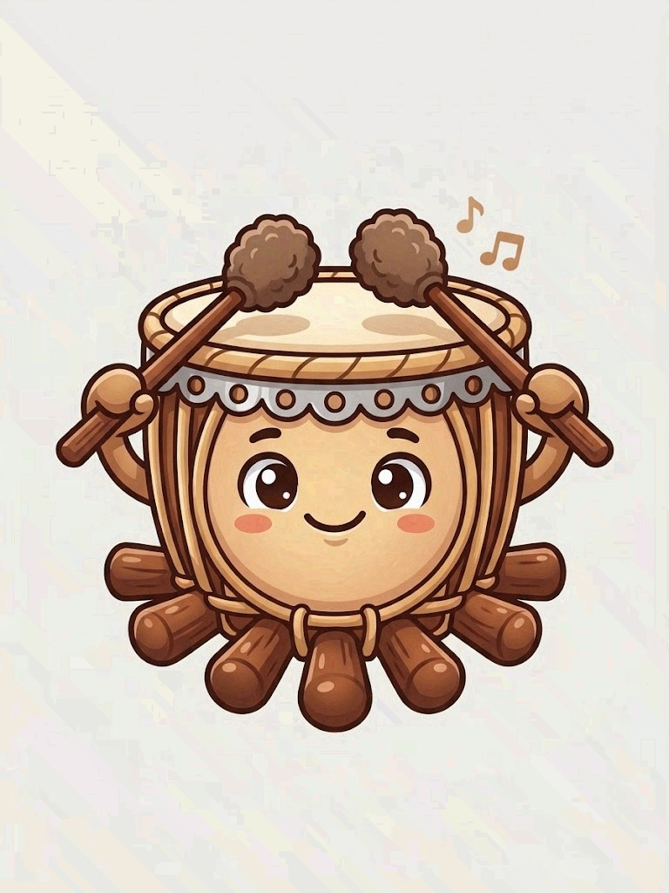

Chat with Rubi
online

Your guide to the rebana ubi
Hit the inner circle or the outer ring of the drum, or press its key. In real life a rebana ubi is played by two people, one on each side of the drum.
You can also type “hit the drum”, “hit the outer drum” or “play a rhythm” in the chat.